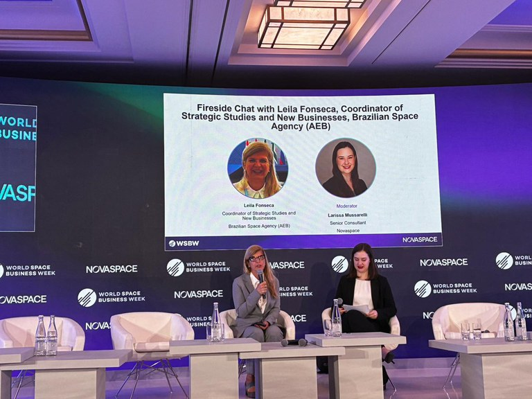
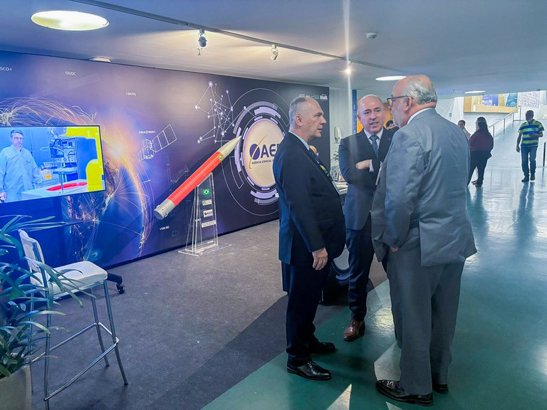
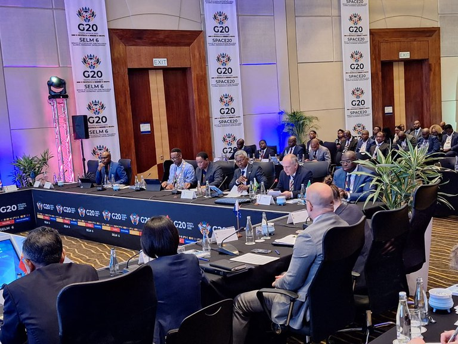

Notícias
Mais recentes:



Outras:
Etapa nacional da OBSAT é realizada no CVT-E
A olimpíada integra teoria e prática no desenvolvimento de protótipos de satélites
Publicado em 29/08/2025 09h25
AEB participa da abertura do IV Seminário de Gestão de Sensores Meteorológicos
Presidente da AEB, Marco Antonio Chamon, reforçou a importância dos sensores e da autonomia nacional na geração de dados ambientais
Publicado em 20/08/2025 09h22
AEB assina acordo que permite visitas escolares nas instalações do CLA
A assinatura da parceria entre a AEB, o DCTA, a Prefeitura de Alcântara e o CLA foi realizada nesta terça (12), no Maranhão
Publicado em 14/08/2025 09h19
AEB e Philsa promovem webinário sobre a conservação marinha com tecnologias espaciais
Aplicações satelitais ganham protagonismo no monitoramento ambiental
Publicado em 13/08/2025 10h10
UFRN abre seleção para escolas públicas participarem do projeto Meninas no Espaço 2025
As inscrições estarão abertas de 11 a 22 de agosto de 2025
Publicado em 11/08/2025 14h53
Nota de pesar – Yosio Edemir Shimabukuro
Publicado em 15/08/2025 15h07